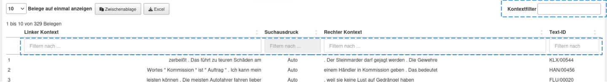

Wie suche ich in der KED-Suche nach Beispielen?
Suche nach einzelnen Suchbegriffen
| Beschreibung | Beispiel | Eingabe | Treffer (Beispiele) | |
|---|---|---|---|---|
| Einfache Wortform | Wenn Sie ein Wort in einer bestimmten Form suchen, dann geben Sie diese Form ein. | Sie suchen nach der Form "liest". | liest [orth=liest] |
liest |
| Einfache Grundform (= Lemma) | Wenn Sie alle (unterschiedlichen) Formen eines Wortes suchen, dann geben Sie das Wort in seiner Grundform mit [base=GRUNDFORM] ein. | Sie suchen Belege für das Wort "glauben". | [base=glauben] | glauben, glaubt, geglaubt, glaub |
| Sie suchen Beispiele für das Wort "Kind". | [base=Kind] | Kinder, Kind, Kindes, Kindern | ||
| Wortarten | Wenn Sie nach Belegen für eine bestimmte Wortart suchen, dann geben Sie die Wortart in einer Abkürzung mit [pos=WORTARTENKÜRZEL] ein. Die wichtigsten suchbaren Wortartenkürzel finden Sie hier. | Sie suchen Beispiele für unterordnende Konjunktionen. Das Wortartenkürzel ist "KOUS". | [pos=KOUS] | dass, ob, weil, ... |
| Tipp: Mit dem Zeichen /x lassen sich Unterkategorien von Wortarten wieder zusammenfassen. | Sie suchen z. B. nach Vollverben (VV), unabhängig davon, ob sie als finite, infinite oder Imperativ-formen vorkommen. | [pos=VV/x] | informiert, dauert, hinstellen, hilft, ... | |
| Sie suchen nach allen Vorkommen des Adjektivs "gültig", unabhängig davon, ob es attributiv, prädikativ oder adverbial verwendet wird. | [base=gültig & pos=ADJ/x] | [ob Sie ein] gültiges [Ticket haben], [wann die Regeln] gültig |
Suche nach Wortfolgen
| Beschreibung | Beispiel | Eingabe | Treffer (Beispiele) | |
|---|---|---|---|---|
| Folge einfacher Wortformen | Wenn Sie eine Folge von Wörtern in einer bestimmten Form suchen, dann geben Sie die Folge in dieser Form ein. | Sie suchen nach Belegen, in denen die Wortfolge "Hunde und Katzen" (in genau dieser Form) vorkommt. | Hunde und Katzen | Hunde und Katzen |
| Folge von Grundformen (= Lemmata) | Wenn Sie Wortfolgen als Grundformen (= Lemmata) suchen, dann finden Sie alle im Korpus vorhandenen Formen-Kombinationen. | Sie suchen alle Formen von "Hunde und Katzen". | [base=Hund] und [base=Katze] | Hunde und Katzen, Hunden und Katzen, Hund und Katze |
| Sie suchen alle Formen von "der Tag". | [base=der][base=Tag] | der Tag, die Tage, den Tagen | ||
| Folge von Wortarten | Sie suchen eine Folge von Wortarten. | Sie suchen Beispiele für die Folge "Artikel - Adjektiv - Nomen". Geben Sie die Wortartenkürzel nacheinander ein. | [pos=ART][pos=ADJA][pos=NN] | der schöne Mantel, ein kleiner Schuh, die traurige Blume, ... |
| Folgen von Wortformen, Lemmata und Wortarten | Sie suchen nach einer Folge von Wortformen, Grundformen (= Lemmata) und Wortarten. Sie können bei der Suche Wortformen, Grundformen und Wortartenkürzel beliebig kombinieren. | Sie suchen Beispiele für die Wortform "der", gefolgt von allen Formen von "Hund". | der [base=Hund] | der Hund, der Hunde |
| Sie suchen Beispiele für verschiedene Artikel vor dem Wort "Hund". | [pos=ART] Hund | der Hund, den Hund, ein Hund, einen Hund | ||
| Sie suchen Beispiele für "nicht", gefolgt von einem Adverb und einer Form des Verbs "essen". | nicht [pos=ADV] [base=essen] | nicht mehr essen, nicht bald gegessen |
Suche nach Wortteilen mit Hilfe von Platzhalterzeichen
Platzhalter sind hilfreich, um nach Wörtern zu suchen, in denen ein bestimmter Suchausdruck enthalten ist. Schreiben Sie dafür den Suchausdruck und den Platzhalter in doppelte Anführungszeichen “SUCHAUSDRUCK …PLATZHALTER…“. Eine Liste mit möglichen Platzhalterzeichen finden Sie hier.
| Beschreibung | Beispiel | Eingabe | Treffer (Beispiele) | |
|---|---|---|---|---|
| Suche nach Wortanfängen | Wenn Sie alle Wörter mit einem gemeinsamen Anfang suchen, dann geben Sie den Anfang ein, gefolgt von einem Platzhalter. | Sie suchen Wörter mit "Lieblings-" am Anfang. Verwenden Sie dafür die Symbole . und +. | "Lieblings.+" | Lieblingsspeise, Lieblingspizza, ... |
| Suche nach Wortenden | Wenn Sie alle Wörter mit einem gemeinsamen Ende suchen, dann geben Sie einen Platzhalter ein, gefolgt von dem Ende. | Sie suchen Wörter, die auf "-ling" enden. | ".+ling" | Frühling, Schädling, ... |
| Suche nach Wortbestandteilen in beliebigen Positionen | Um nach Teilen von Wörtern an beliebigen Wortpositionen zu suchen, verwenden Sie die Platzhalterzeichen . und *. | Sie suchen Beispielwörter für die Schreibung mit "-ieh-" an beliebiger Position. | ".*ieh.*" | ziehen, sieht, anziehen, Anziehungskraft, Arbeitsvieh, ... |
Suche nach alternativen Formen
| Beschreibung | Beispiel | Eingabe | Treffer (Beispiele) | |
|---|---|---|---|---|
| Alternativen einfacher Wortformen | Wenn Sie nach Beispielen für eine bestimmte Form eines Wortes oder für eine bestimmte Form eines anderen Wortes suchen, dann schreiben Sie die jeweiligen Formen in runde Klammern und trennen diese mit einem senkrechten Strich: (WORTFORM1|WORTFORM2) | Sie suchen nach Beispielen, in denen "Hund" oder "Katze" in diesen Formen vorkommen. | (Hund|Katze) | Hund, Katze |
| Alternativen von Grundformen (= Lemmata) | Wenn Sie nach Beispielen für ein bestimmtes Wort oder für ein bestimmtes anderes Wort in allen ihren Formen suchen, dann geben Sie die Wörter in der Grundform ein und trennen diese mit einem senkrechten Strich: [base=GRUNDFORM1]|[base=GRUNDFORM2] | Sie suchen nach Beispielen, in denen alle Formen von "Hund" oder alle Formen von "Katze" vorkommen. | [base=Hund]|[base=Katze] | Hund, Hunde, Hunden..., Katze, Katzen, ... |
| Alternativen von Wortfolgen | Wenn Sie nach alternativen Wortfolgen suchen, schreiben Sie die Wortfolgen in runde Klammern (WORTFOLGE1)|(WORTFOLGE2) | Sie suchen Beispiele für "warme Hände" und "kalte Füße". | (warme Hände)|(kalte Füße) | warme Hände, kalte Füße |
| Sie suchen alle Formen der Wortfolgen "warme Hand" und "kalter Fuß" (Grundformensuche). | ([base=warm] [base=Hand]|[base=kalt] [base=Fuß]) | warme Hände, kalte Füße, kalten Füße, warmer Hand, ... |
Suche mit Bedingungen
| Beschreibung | Beispiel | Eingabe | Treffer (Beispiele) | |
|---|---|---|---|---|
| Positive Bedingungen | Wenn Sie Ihrer Suchanfrage mit einer Bedingung verknüpfen wollen, verwenden Sie das &-Zeichen. Hinweis: Um das Bedingungszeichen & für einfache Wortformen zu nutzen, müssen Sie diese mit [orth=WORTFORM] angeben. | Sie suchen Beispiele für "weg" als Adverb. | [orth=weg & pos=ADV] | [damit der Wind sie weit] weg [tragen kann], [außer dass etwas] weg [ist] |
| Sie suchen Beispiele für "weg" als (trennbarem) Verbteil (Verbpräfix). | [orth=weg & pos=PTKVZ] | [pumpt man das Wasser] weg, [schwemmt der Regen die Erde] weg | ||
| Sie suchen nach den Formen der Grundform "wehen" als Verbformen. | [base=wehen & pos=VVFIN] | wehen, weht, wehte, ... | ||
| Negierte Bedingungen | Um explizit bestimmte Varianten eines Suchausdrucks auszuschließen, können Sie vor dem negierten Ausdruck ein Ausrufezeichen (vor dem Gleichheitszeichen) setzen: =! Hinweis: Negierte Ausdrücke können nicht alleine, sondern nur als Teil einer Such-Sequenz verwendet werden. | Sie suchen nach Vorkommen von "ab", jedoch nicht als Verbteil von trennbaren Verben. | [orth=ab & pos!=PTKVZ] | [wechseln Sie] ab [und zu Ihre Sitzposition], [Menschen] ab [60 Jahre], ... |
Suche mit Abstandsinformationen
| Beschreibung | Beispiel | Eingabe | Treffer (Beispiele) | |
|---|---|---|---|---|
| Ein Wort Abstand | Um Ausdrücke zu suchen, zwischen denen ein bestimmter Abstand, d.h. eine bestimmte Anzahl von (beliebigen) Wörtern vorkommen soll, verwenden Sie eckige Klammern [] zwischen den Suchausdrücken. | Sie möchten Belege für die Formen "das" und "Kind" finden, zwischen denen ein weiteres Wort steht. | das [] Kind | das jüngste Kind, ... |
| N Wörter Abstand | Wenn der Abstand zwischen zwei Formen mehr als ein Wort betragen soll, dann nutzen Sie geschweifte Klammern {} nach den eckigen und schreiben die Zahl der gewünschten Abstandswörter zwischen die Klammern. | Sie möchten Belege für die Abfolge Artikel + Wortform "Kind" finden, zwischen denen genau zwei Wörter stehen. | [pos=ART] []{2} Kind | das neu geborene Kind, das sich ein Kind, der Mensch als Kind, ... |
| Max./Min. N Wörter Abstand | Sie können eine Mindest- und Höchstzahl an Abstandswörtern festlegen. Schreiben Sie Mindest- und Höchstzahl mit Komma getrennt in die geschweifte Klammer: {x,y} | Sie möchten Belege für die Formen "Kinder" und "gehen" finden, zwischen denen mindestens 1 Wort und höchstens drei Wörter stehen. | Kinder []{1,3} gehen | Kinder und Jugendliche gehen, Kinder müssen zur Schule gehen ... |
Groß- und Kleinschreibung
| Beschreibung | Beispiel | Eingabe | Treffer (Beispiele) | |
|---|---|---|---|---|
| Groß- oder Kleinschreibung | Wenn Sie ein Wort groß oder klein geschrieben haben möchten, dann geben Sie es mit der gewünschten Schreibung ein. | Sie wollen Satzanfänge finden, die mit "Am Morgen" beginnen: Schreiben Sie "am" groß. | Am Morgen | Am Morgen |
| Wenn Sie "am Morgen" innerhalb von Sätzen, also kleingeschrieben, finden wollen, dann schreiben Sie "am" klein. | am Morgen | am Morgen | ||
| Groß- und Kleinschreibung | Wenn Sie sowohl klein- als auch großgeschriebene Formen finden wollen, wenn also die Schreibung egal ist, dann fügen Sie /i nach dem Suchbegriff ein. | Sie suchen Beispiele für "am Morgen" mit "am" sowohl klein- als auch großgeschrieben. | am/i Morgen | Am Morgen, am Morgen |
Suche mit Positionsangaben
| Beschreibung | Beispiel | Eingabe | Treffer (Beispiele) | |
|---|---|---|---|---|
| Suchausdruck = Satz | Ihr Suchausdruck soll den gesamten Satz umfassen, also identisch mit dem Satz sein. Geben Sie matches(<base/s=s>, SUCHAUSDRUCK) ein. | Sie suchen nach Sätzen bzw. Satzfragmenten, die aus einer Zahl und einem Nomen bestehen, etwa um Überschriften in dieser Form zu finden. | matches(<base/s=s>, [pos=CARD][pos=NN]) | Zwei Beispiele: Wenn Menschen einen Wald komplett abholzen, Zehn Gebote (als Überschrift) |
| Suchausdruck am Satzanfang | Ihr Suchausdruck soll am Satzanfang vorkommen. Geben Sie startsWith( |
Sie suchen nach Nebensätzen, die am Anfang des Satzes (im Vorfeld) stehen. | startsWith(<base/s=s>, [pos=KOUS]) | Wenn Sie die Apps sehr oft und lange nutzen, denken Sie vielleicht ständig an Ihre Migräne. Damit das Video von YouTube abgerufen werden kann, müssen Marketing-Cookies akzeptiert werden. |
| Suchausdruck am Satzende | Ihr Suchausdruck soll am Satzende vorkommen. | Sie suchen nach Sätzen, die auf ein prädikatives oder adverbiales Adjektiv enden. | endsWith(<base/s=s>, [pos=ADJD]) | Eine Thrombose ist gefährlich. Bei Osteoporose brechen die Knochen leicht. |
| Suchausdruck nur innerhalb eines Satzes | Ihr Suchausdruck soll nur innerhalb der Grenzen eines Satzes gefunden werden. | Sie suchen nach Belegen für das Wort "Kind", gefolgt vom Verb "schlafen" in einem beliebigen Abstand, aber innerhalb eines Satzes. | contains(<base/s=s>, [base=Kind][]*[base=schlafen]) | Und Ihr Kind sollte viel schlafen. Kinder schlafen meist länger als Erwachsene. Der Sandmann streut den Kindern Sand in die Augen, so dass sie schlafen. |
Wortartenkürzel
| Wortart | POS-Kürzel | Beschreibung | Beispiele |
|---|---|---|---|
| Verben | |||
| finite Verbformen | VVFIN | finites Vollverb | [du] gehst, [wir] kommst [an] |
| VAFIN | finites Hilfsverb | [du] bist, [wir] werden | |
| VMFIN | finites Modalverb | darf, soll | |
| PTKVZ | abgetrennter Verbzusatz | [er kommt] an, [er fährt] Rad | |
| infinite Verbformen | VVINF | Infinitiv von Vollverben | gehen, ankommen |
| VVIZU | Infinitiv von Vollverben mit (integriertem) "zu" | anzukommen, loszulassen | |
| PTKZU | "zu" vor Infinitiv | zu [gehen] | |
| VAINF | Infinitiv von Hilfsverben | haben, sein, werden, bleiben, ... | |
| VMINF | Infinitiv von Modalverben | wollen, dürfen | |
| VVPP | Partizip Perfekt (Partizip II) von Vollverben | gegangen, angekommen | |
| VAPP | Partizip Perfekt (Partizip II) von Hilfsverben | gewesen | |
| Imperativformen | VVIMP | Imperativ von Vollverben | Komm [!] |
| VAIMP | Imperativ von Hilfsverben | Sei [ruhig !] | |
| Nomen | NN | normales Nomen, Infinitive als Nomen | Tisch, Herr, [das] Reisen |
| NE | Eigennamen | Hans, Hamburg, HSV | |
| TRUNC | Kompositions-Erstglied | An- [und Abreise] | |
| Adjektive | ADJA | attributives Adjektiv | [das] große [Haus] |
| ADJD | adverbiales oder prädikatives Adjektiv | [er fährt] schnell, [er ist] schnell | |
| Adverben | ADV | Adverb | schon, bald, doch |
| PAV | Pronominal-Adverb | dafür, dabei, deswegen, trotzdem | |
| PTKA | Partikel bei Adjektiv oder Adverb | am [schönsten], zu [schnell] | |
| Präpositionen | APPR | Präposition | in [der Stadt], ohne [mich] |
| APPRART | Präposition mit Artikel (Verschmelzung) | im [Haus], zur [Sache] | |
| APPO | Postposition | [ihm] zufolge, [der Sache] wegen | |
| Artikel | ART | Definit- oder Indefinit-Artikel | der [Kuchen], die, das, ein, eine |
| PDAT | Demonstrativ-Artikel | diese [Menschen] | |
| PPOSAT | Possessiv-Artikel | mein [Buch], deine [Mutter] | |
| PWAT | Interrogativ-Artikel | welche [Farbe], wessen [Hände] | |
| PRELAT | Relativ-Artikel ("dessen" und "deren") | [der Mann ,] dessen [Hund]; [die Eltern, mit] deren [Kindern] | |
| PIAT | Weitere Artikel | kein [Mensch], irgendein [Glas], viele [Stellen], einige [Wörter], manche [Leute], alle [Menschen], wenig [Kaffee], jeder [Tag], mehrere [Autos] | |
| Pronomen | PDS | Demonstrativ-Pronomen | das [ist nichts], [was will] der [?], die [schmeckt gut], dieser, jener |
| PIS | Indefinit-Pronomen | keiner [kennt mich], viele [wollen kommen], man, niemand | |
| PPER | Personalpronomen | ich, er, ihm, mich, dir | |
| PPOSS | Possessiv-Pronomen | [das ist] meins, deiner [ist besser] | |
| PRELS | Relativ-Pronomen | [der Hund,] der, … | |
| PRF | Reflexiv-Pronomen | sich, einander, dich, mir, … | |
| PWS | Interrogativ-Pronomen (Personen und Sachen) | wer [darf kommen?], was [sind die Ursachen?] | |
| PWAV | adverbiales Interrogativ- oder Relativpronomen | warum, wo, wann, worüber, wobei, wie, … | |
| Konjunktionen | KOUS | Nebensatz-einleitende Konjunktion (Subjunktor) | weil, dass, damit, wenn, ob, als, ... |
| KOUI | Infinitiv-mit-zu-Satz einleitende Konjunktion (Subjunktor) | um [zu leben], anstatt [zu fragen], ohne [abzunehmen] | |
| KON | nebenordnende Konjunktion (Konjunktor) | und, oder, aber, denn, sondern | |
| KOKOM | Vergleichskonjunktion | [besser] als [mein Vater], [so , ] wie [ich dachte] | |
| Partikeln | PTKNEG | Negationspartikel "nicht" | nicht |
| PTKANT | Antwortpartikel | ja, nein, danke, bitte | |
| ITJ | Interjektion | mhm, ach, tja | |
| Sonstige | CARD | Kardinalzahl | zwei [Männer], [im Jahre] 1994 |
| FM | Fremdsprachliche Ausdrücke | [Er hat das mit “] A big fish [” übersetzt] | |
| Interpunktion | XY | Nichtwort, Ausdrücke mit Sonderzeichen | 3:7, H2O, D2XW3 |
| $, | Komma | , | |
| $. | Satzbeendende Interpunktionszeichen | . ? ! ; : | |
| $( | Satzinterne Interpunktionszeichen | ‐[,] () | |
Platzhalter
| Zeichen | Erläuterung | Eingabe | Treffer |
|---|---|---|---|
| Operatoren | |||
| . | Das Punkt-Symbol steht für ein beliebiges Zeichen. | ".eine" Frau | deine Frau, seine Frau, meine Frau, keine Frau |
| "Fr..de" | Fremde, Freude, Friede | ||
| () | Runde Klammern umfassen eine Gruppe von Zeichen, Zeichenfolgen oder Wörtern. Hinweis: Werden bei der Suche normalerweise zusammen mit | verwendet. | "Fr(ie|eu)de" | Friede, Freude |
| | | Trennt alternative Zeichen oder Zeichenfolgen voneinander ab. Hinweis: Wird bei der Suche normalerweise zusammen mit () verwendet. | "Fr(ie|eu|em)de" | Friede, Freude, Fremde |
| [] | Eckige Klammern umfassen alternative Zeichen. | "H[au]nd" | Hand, Hund |
| \ | Kennzeichnet das nachfolgende Zeichen als Interpunktionszeichen (im Text) - und nicht als Sonderzeichen (Platzhalter). | "b.w\." | bzw. |
| Quantifizierer | |||
| ? | Das Zeichen davor kommt 0 oder genau 1 Mal vor. | "kl?eine" Kinder | kleine Kinder, keine Kinder |
| * | Das Zeichen davor kommt 0 mal oder beliebig oft vor. | ".*ab" | ab, gab, hab, Trab, vergab, Maßstab, ... |
| + | Das Zeichen davor kommt 1 mal oder beliebig oft vor. | "Schif+ahrt" | Schiffahrt, Schifffahrt, Schiffffahrt |
| {n} | Das Zeichen davor kommt genau n-mal vor. | "Rha(bar){2}" | Rhabarbar |
| {n,} | Das Zeichen davor kommt mindestens n-mal vor. | "(K|k)an{1,}te" | kannte, Kante, Kannte |
| {n,m} | Das Zeichen davor kommt mindestens n-mal, aber nicht öfter als m-mal vor. | "Schlos{1,3}traße" | Schlostraße, Schlosstraße, Schlossstraße |
Suchergebnisse mit regulären Ausdrücken filtern
Sie können die Suchergebnisse mit regulären Ausdrücken filtern. Nutzen Sie dafür den Kontextfilter oder die Filter im Kopf der Ergebnistabelle (Abbildung 1).

Mit regulären Ausdrücken können Sie nur den Rohtext durchsuchen. Eine Suche nach Lemmata oder Wortarten ist nicht möglich. Die folgende Tabelle enthält eine Auswahl wichtiger regulärer Ausdrücke.
| Ausdruck | Erläuterung | Beispiel | Eingabe | Treffer (Beispiele) |
|---|---|---|---|---|
| \b | Der Ausdruck \b markiert eine Wortgrenze. Eine Wortgrenze ist der Punkt zwischen einem Wortzeichen (z. B. Buchstaben oder Zahlen) und einem Nicht-Wortzeichen (z. B. Leerzeichen, Satzzeichen oder dem Anfang/Ende einer Zeile). | Sie suchen nach der Form "so". | \bso\b | so [am Ende der Zeile] so [mit Leerzeichen] so, [mit Komma] so! [mit Ausrufezeichen] (aber nicht: sofort, also, Isolde etc.) |
| Sie suchen nach Formen, die auf "so" enden. | so\b | so ebenso also |
||
| Sie suchen nach Formen, die mit "So" (groß geschrieben) beginnen. | \bSo | So Sofort Sonst |
||
| [...] | Eckige Klammern [...] werden verwendet, um eine Zeichenklasse zu definieren. Alles, was innerhalb der eckigen Klammern steht, wird als mögliche Übereinstimmung betrachtet. | Sie suchen nach Formen von "so" sowohl groß geschrieben als auch klein geschrieben. | \b[Ss]o\b | So so So! |
| | | Das Zeichen | wird als logisches "ODER" verwendet. Es ermöglicht, zwischen mehreren Alternativen zu wählen. Nutzen Sie runde Klammern (...), um komplexere Ausdrücke zu erstellen. | Sie suchen nach den Formen "desto" oder "umso". | (desto|umso) | desto umso |
| ^ | Das Zeichen ^ wird als Anker verwendet, um den Anfang einer Zeile zu kennzeichnen. | Sie suchen in den Suchergebnissen nach Belegen, deren linker Kontext mit "so" beginnen. Geben Sie den folgenden Ausdruck im linken Kontextfilter ein. | ^so | solange ... so ist ... |
| $ | Das Zeichen $ wird als Anker verwendet, um das Ende einer Zeile zu kennzeichnen. | Sie suchen in den Suchergebnissen nach Belegen, deren rechter Kontext mit "so" endet. Geben Sie den folgenden Ausdruck im rechten Kontextfilter ein. | so$ | ... dann ist das eben so ... er ist so |
| \d | Das Zeichen \d steht für ein Ziffernzeichen. Es ist ein Kurzschreibweise, die eine Ziffer von 0 bis 9 repräsentiert. | Sie suchen nach Folgen von vier Ziffern, z. B. Jahreszahlen. | \d\d\d\d | 1984 2024 |
| \w | Das Zeichen \w steht für ein Wortzeichen. Es repräsentiert jeden alphanumerischen Charakter, einschließlich Buchstaben (sowohl Groß- als auch Kleinbuchstaben), Ziffern und dem Unterstrich (_). | Sie suchen nach der Zeichenfolge "ein" im Innern oder am Ende eines Wortes. | \wein | sein deine mein keiner nacheinander |
| . | Das Punkt-Zeichen . steht für ein beliebiges Zeichen. | Sie suchen nach der Zeichenfolge "ich". | .ich | ich mich sich unendlich sicher |
| Weitere Beispiele zu diesem Platzhalterzeichen finden Sie hier. | ||||
| *?+ | Die Zeichen *, ? und + sind Quantifizierer. Sie geben an, wie häufig das vorangegangene Zeichen wiederholt werden soll. * steht für eine beliebige Anzahl von Wiederholungen, ? für maximal eine Wiederholung und + für mindestens eine Wiederholung. | Sie suchen nach Zeitangaben bestehend aus einer oder mehr Ziffern gefolgt von einem Leerzeichen und dem Ausdruck "Uhr". | \d.*Uhr | 9 Uhr 18 Uhr 11.11 Uhr 16:32 Uhr |
| Weitere Beispiele zu diesen und anderen Quantifizierern finden Sie hier. |
© Daniel Jach und Gunther Dietz 2025. All rights reserved. | Impressum